|
|
|
Floral
egg crab
Atergatis floridus
Family
Xanthidae
updated
Dec 2019
if you
learn only 3 things about them ...
 These crabs are poisonous to eat! Their toxins are NOT
destroyed by cooking. These crabs are poisonous to eat! Their toxins are NOT
destroyed by cooking.
They are generally secretive and slow-moving.
They
are not venomous but it's best not to touch them. |
|
Where
seen? This round well-camouflaged crab is commonly seen
on our Southern shores, among coral rubble or reefs. But sightings usually
not as numerous as the Red egg crab - perhaps because it is more well camouflaged? It is more active at night.
Features: Body width 8-10cm. Body
oval, smooth surface and smooth body edge decorated spaced out little circles. Body colour greenish- and greenish-blue-brown. 'Floridus'
in Latin means 'flowery' and indeed, the body of adults always have a fine network of fine lines white or yellow that forms
a delicate lacy floral pattern. Also called the Shawl crab because
the lacy white pattern resembles a shawl. Large pincers both about
equal in size, smooth (no pimples) with black tips that are spoon-shaped.
Males may have larger pincers. Walking legs thick squarish with lilac
edges, not hairy. |
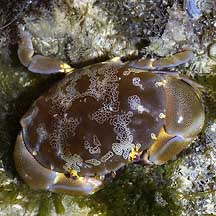
Sentosa, May 04 |
|
|
What does it eat? Although it
is described as a vegetarian, one was seen happily eating a fish.
Like most other Xanthid crabs, it is highly
poisonous and should not be eaten.
Status and threats: This crab
is listed as 'Vulnerable' on the Red List of threatened animals of
Singapore. |
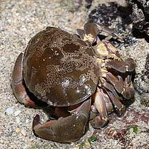
A pair of mating egg crabs.
Cyrene Reef, Jul 10
Photo shared by James Koh on his
blog. |
|
|
| Floral
egg crabs on Singapore shores |
| Other sightings on Singapore shores |
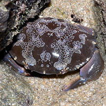
East Coast PCN, Jul 20
Photo shared by Loh Kok Sheng on facebook. |
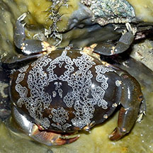
East Coast Park (B), Nov 25
Photo shared by Loh Kok Sheng on facebook. |
|
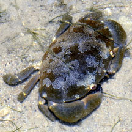
Labrador, Oct 25
Photo shared by Loh Kok Sheng on facebook. |
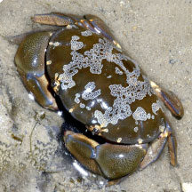
Sentosa Tg Rimau, Oct 25
Photo shared by Loh Kok Sheng on facebook. |
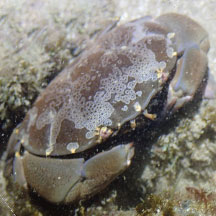
St John's Island, Oct 25
Photo shared by Adriane Lee on facebook |
St John's Island, Oct 25
Photo shared by Adriane Lee on facebook |
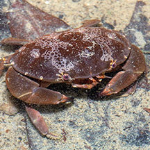
Seringat-Kias, Nov 19
Photo shared by Marcus Ng on facebook. |
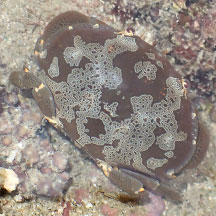
Big Sister's Island, Feb 26
Photo shared by Chay Hoon on facebook |
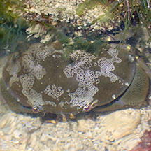
Cyrene, Feb 26
Photo shared by Jianlin Liu on facebook. |
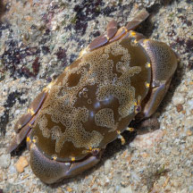
Pulau Jong, Aug 25
Photo shared by Marcus Ng on facebook. |
|
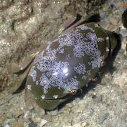
Pulau Hantu, Dec 25
Photo shared by Jianlin Liu on facebook. |
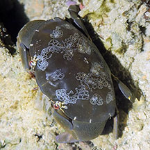
Terumbu Raya, May 24
Photo shared by Che Cheng Neo on facebook. |
|
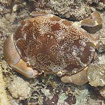
Beting Bemban Besar, May 10
Photo shared by James Koh on his
blog. |
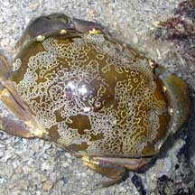
Terumbu Bemban, Jun 10
Photo shared by Toh Chay Hoom on her
blog. |
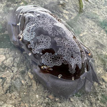
Terumbu Bemban, Apr 24
Photo shared by Tammy Lim on facebook. |
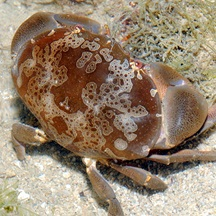
Terumbu Pempang Tengah, May 11
Photo shared by Loh Kok Sheng on his
blog. |
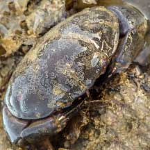
Terumbu Pempang Laut, Aug 21
Photo shared by Vincent Choo on facebook. |
|
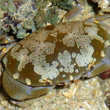
Pulau Pawai, Dec 09
Photo shared by Loh Kok Sheng on his
flickr. |
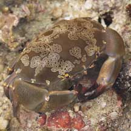
Pulau Biola, Dec 09
Photo shared by James Koh on his
flickr. |
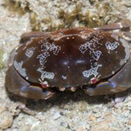
Pulau Jong, Apr 15
Photo shared by Marcus Ng on facebook. |
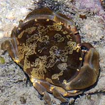
Pulau Senang, Jun 10 |
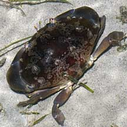
Pulau Senang, Aug 10 |
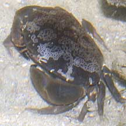
Pulau Salu, Aug 10 |
Links
References
- Peter K.
L. Ng and Peter J. F. Davie, 31 Dec 2007, On
the identity of Atergatis floridus (Linnaeus, 1767) and
recognition of Atergatis ocyroe (Herbst, 1901) as a valid
species from the Indian Ocean (Crustacea: Brachyura: Xanthidae)
The Raffles Bulletin of Zoology 2007 Supplement No. 16 : 169-175
National University of Singapore
- Lim, S.,
P. Ng, L. Tan, & W. Y. Chin, 1994. Rhythm of the Sea: The Life
and Times of Labrador Beach. Division of Biology, School of
Science, Nanyang Technological University & Department of Zoology,
the National University of Singapore. 160 pp.
- Gopalakrishnakone
P., 1990. A
Colour Guide to Dangerous Animals.
Venom & Toxin Research Group, Faculty of Medicine, National
University of Singapore. 156 pp.
- Davison,
G.W. H. and P. K. L. Ng and Ho Hua Chew, 2008. The Singapore
Red Data Book: Threatened plants and animals of Singapore.
Nature Society (Singapore). 285 pp.
- Chuang, S.
H., 1961. On
Malayan Shores.
Muwu Shosa, Singapore. 225 pp., plates 1-112.
- Davison,
G.W. H. and P. K. L. Ng and Ho Hua Chew, 2008. The Singapore
Red Data Book: Threatened plants and animals of Singapore.
Nature Society (Singapore). 285 pp.
- Jones Diana
S. and Gary J. Morgan, 2002. A Field Guide to Crustaceans of
Australian Waters. Reed New Holland. 224 pp.
|
|
|